Abstract
Automated 3D scene generation is pivotal for applications spanning virtual reality, digital content creation, and Embodied AI. While computer graphics prioritizes aesthetic layouts, vision and robotics demand scenes that mirror realworld complexity which current data-driven methods struggle to achieve due to limited unstructured training data and insufficient spatial and physical modeling. We propose SPREAD, a diffusion-based framework that jointly learns spatial and physical relationships through a graph transformer, explicitly conditioning on posed scene point clouds for geometric awareness. Moreover, our model integrates differentiable guidance for collision avoidance, relational constraint, and gravity, ensuring physically coherent scenes without sacrificing relational context. Our experiments on 3D-FRONT and ProcTHOR datasets demonstrate state-of-the-art performance in spatial-relational reasoning and physical metrics. Moreover, SPREAD outperforms baselines in scene consistency and stability during pre- and post-physics simulation, proving its capability to generate simulation-ready environments for embodied AI agents.
Method
SPREAD is a geometry-aware diffusion framework for generating physically plausible 3D indoor scenes. Each object is represented by its translation, rotation, geometric descriptor, and two structured priors: a spatial relation graph and a physical interaction graph. During denoising, SPREAD uses a graph transformer to jointly reason over object states and relation graphs, while a geometry-aware perceiver injects mesh-level geometric evidence. At inference time, SPREAD further applies a multi-guidance strategy with three differentiable terms: collision guidance to remove mesh interpenetration, gravity guidance to prevent floating and enforce support, and relation guidance to preserve intended support/contact layouts. This combination lets the model generate scenes that are not only visually reasonable, but also structurally stable and simulation-ready.
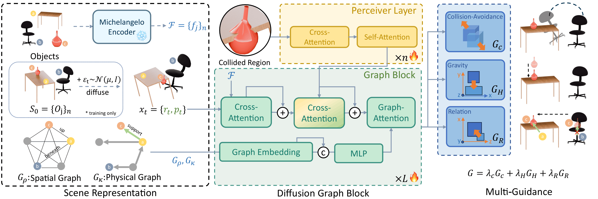
Experiments
We evaluate SPREAD on 3D-FRONT and ProcTHOR, two complementary indoor-scene benchmarks. 3D-FRONT contains designer-curated layouts emphasizing visual realism, while ProcTHOR contains procedurally generated scenes with richer physical interactions and support relations. Following prior work, we augment scenes with structured relative-position annotations and interaction labels to form explicit scene graphs.
We compare against three representative baselines: ATISS (autoregressive scene synthesis), DiffuScene (diffusion-based scene generation), and InstructScene (graph-based instruction-driven synthesis). We report both visual quality and physical plausibility using FID, mesh collision rate, Graph Recall (GRecall), Average Support Distance (ASD), and simulation stability measured in NVIDIA Isaac Sim.
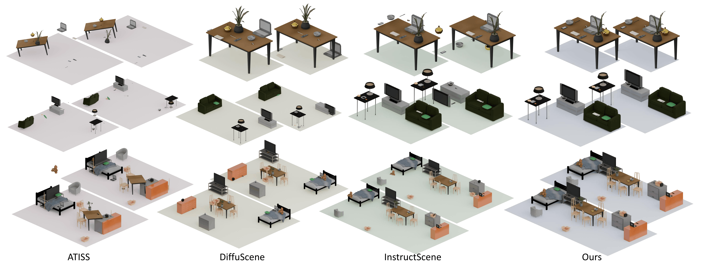
Qualitative comparison before and after simulation.
We additionally perform ablations on the geometry-aware perceiver and the multi-guidance module to isolate their effects. The results show that geometry modeling improves physical metrics even before guidance, while the full guidance stack yields the strongest gains in collision reduction, support quality, and simulation robustness.
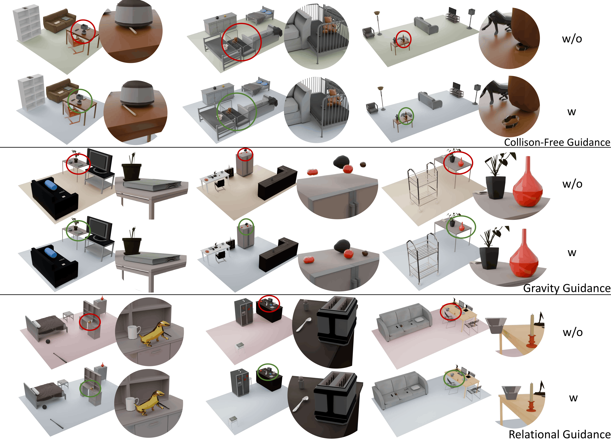
Guidance ablation across collision, gravity, and relation constraints.
Results
We report the main quantitative results from the paper below. Table 1 compares SPREAD against prior methods on 3D-FRONT and ProcTHOR, while Table 2 presents the ablation study on ProcTHOR. Together, these results show that SPREAD substantially improves physical plausibility and relational fidelity, especially on the interaction-rich ProcTHOR benchmark.
Table 1. Quantitative comparison
| Method | 3D-FRONT | ProcTHOR | |||||||
|---|---|---|---|---|---|---|---|---|---|
| Colmesh ↓ Bedroom |
Colmesh ↓ Livingroom |
Colmesh ↓ Diningroom |
FID ↓ | GRecall ↑ | Colmesh ↓ | ASD ↓ | Stability ↑ | FID ↓ | |
| ATISS | 0.275 | 0.451 | 0.428 | 68.0 | / | 0.174 | 0.510 | 0.813 | 33.9 |
| DiffuScene | 0.298 | 0.359 | 0.376 | 61.6 | / | 0.360 | 0.071 | 0.886 | 21.4 |
| InstructScene | 0.285 | 0.350 | 0.331 | 61.3 | 0.964 | 0.260 | 0.021 | 0.876 | 20.0 |
| Ours | 0.097 | 0.185 | 0.183 | 64.7 | 0.979 | 0.121 | 0.007 | 0.950 | 18.8 |
Table 2. Ablation on ProcTHOR
| Method | GRecall ↑ | Colmesh ↓ | ASD ↓ | Stability ↑ |
|---|---|---|---|---|
| Ours | 0.963 | 0.241 | 0.014 | 0.934 |
| +Geometry | 0.965 | 0.225 | 0.012 | 0.938 |
| +Guidance | 0.979 | 0.121 | 0.007 | 0.950 |
Qualitative examples of generated scenes are shown below. These samples highlight SPREAD's ability to arrange diverse indoor objects into plausible, relation-consistent layouts while maintaining rich physical interactions and stable support structure.
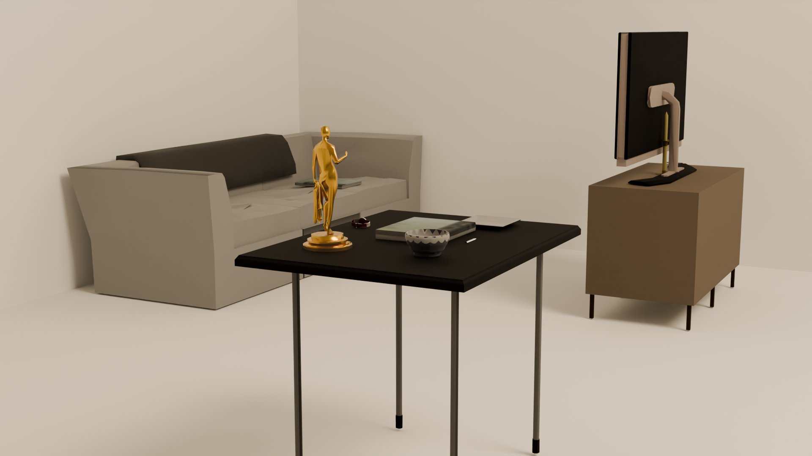
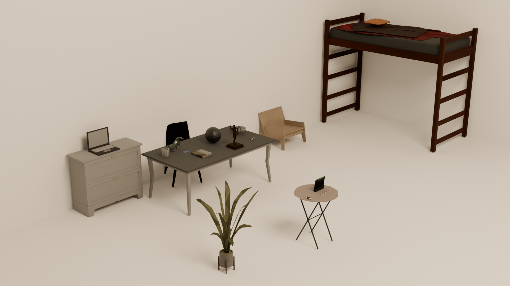
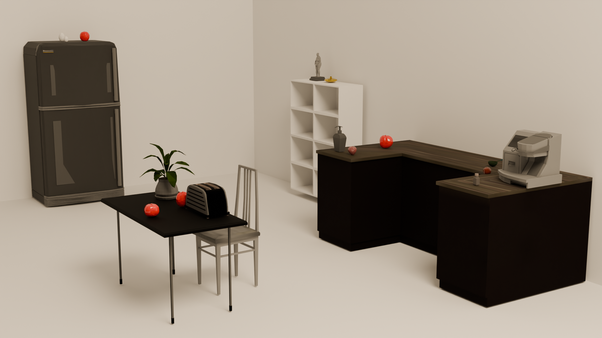
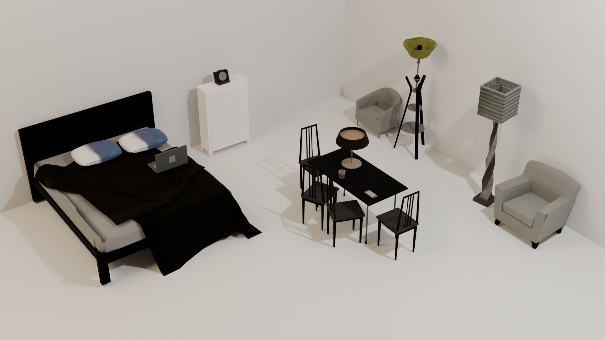
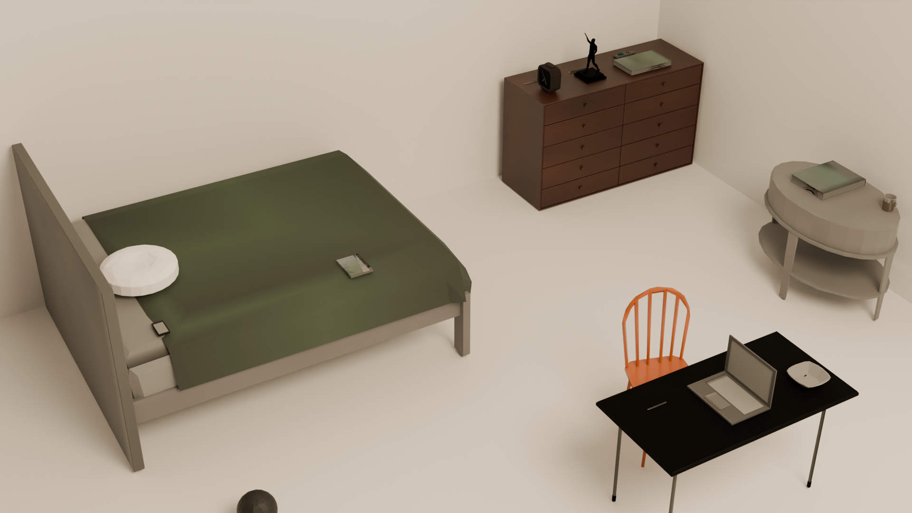
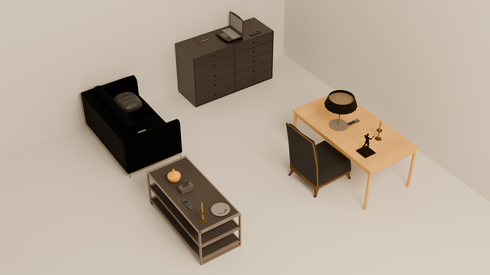
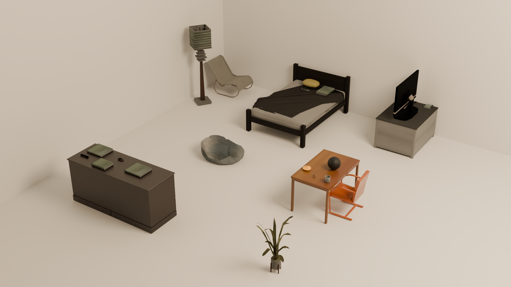
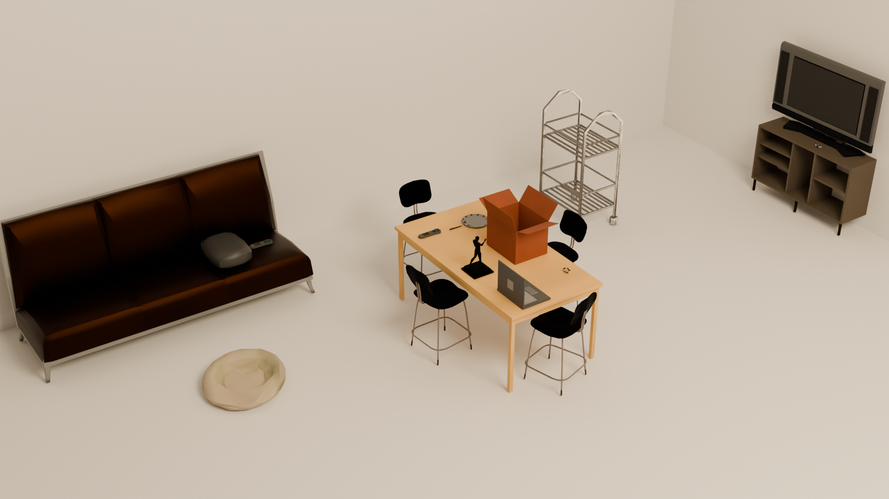
BibTeX
@article{li2026spread,
title={SPREAD: Spatial-Physical REasoning via geometry Aware Diffusion},
author={Li, Minzhang and Shao, Kuixiang and Li, Xuebing and Jiao, Yuyang and Bai, Yinuo and Zhou, Hengan and Shen, Sixian and Gu, Jiayuan and Yu, Jingyi},
journal={arXiv preprint arXiv:2603.27573},
year={2026},
url={https://arxiv.org/abs/2603.27573}
}